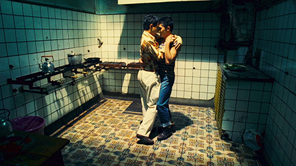

"Queen of Polka Dots", Yayoi Kusama is a well known Japanese contemporary artist known for her immersive environmental installations as well as painting and sculptures with repetitive patterns, especially polka dots. Her work tends to explore themes of infinity and repetition to display her thoughts on the relationship between the individual and the universe.
I am a personal fan of lots of repetition, doing a lot of it myself in my art projects in school while growing up even before knowing who she was. So when I found out about her, I immediately felt the connection and am still in awe every time I see her works. If I ever wanted to go for a career in the arts, I would want to make similar art to her. I honestly feel like I can relate to the amount of random, controlled chaos she is able to create with her pieces. Rest in Peace Yayoi Kusama.
Wong Kar-Wai

Film still from Happy Together (1997), directed by Wong Kar-Wai.
Wong Kar Wai is a Hong Kong film maker, well known for his unique stylized films that explore emotion throuh nonlinear narratives. Other than his different way of story telling, he is well known for his usage of vivid colors and great music choice. His films tend to adventure into emotions like love, loneliness, and longing. He is also not afraid to delve into the topics of LGBTQ+, considering a majority of his films being from before the 21st century.
I have only seen some of his work because I am not much of a watcher of anything. But because of that, his work stands out so much to me from what little I've seen. His distict and unique story telling almost makes it feel like you are personally living through, or at least watching the story happen in real life. His work has always left me constantly thinking both throughout and after the film where I am able to really connect emotionally with his pieces. I think his uniqueness is so inspiring and makes me feel good when I don't always want to fit the "industry standards" as long as I get the point across of my piece.
A new and uprising contender on the DJ/EDM scene, DJ Mandy is most known for her unique take on music. She first took fame on social media because of her purposely bad mixes, as well as her using audio of things you would never expect, like her signature sound of mixing in the fire alarm sound into her sets.
Her usage of sounds that you would never expect inspire me a lot to really look into anything and everything, and try to pull whatever you can from it and use it for your work. Because she proves that something that you would never expect would work, can work if you really try to make it work. I've only seen her live once, but the enjoyment I had while listening to her set is one of the best times I have ever had. Because, who wouldn't remember jamming out at midnight to a fire alarm.
With this practiceI learned three things. I learned how to add images onto my webpage. I also learned how to add hyperlinks to guide viewers to different pages. And lastly, I learned how to add my alt text to an image, and I was able to see how it can show up if I put in the wrong file name for the directory, as well as I was able to find it in the code when I inspect element it.
I messed around a little with the css code with only stuff I knew how to change. I like the new background color I chose as well as changing the color of the hyperlinks to better fit a color I liked. I also was able to margin and padding to give the text and images a little more space because I felt that everything was too close.
I am currently satisfied with its current state. I was able to do all the things we were taught, as well as did some experimentation to change some things we didn’t talk about. I knew what this class was when going into it, but its still amazing to me that I am able to create something like this when I had no prior knowledge.